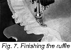

1926—The New-Way Course in Fashionable Clothes-Making
Lesson 7—Trimming
The Ruffle as a Trimming
There seems to be no trimming quite as dainty and attractive, quite as feminine, as the ruffle. It adds a certain airy charm that somehow no other applied trimming can achieve. Yet, strangely enough, it is one of the simplest trimmings to make.
Can you conceive of a frilly summer-time frock without delicate ruffles to add a just-right finish? Can you think of dainty underthings without a ruffle or two peeping unexpectedly from behind some severe corner? Can you imagine a sweet little dress for Baby, without delicate ruffles to add fullness and to impart a touch of dainty trimming?
But ruffles, you know, must be well made and well applied before they can be called beautiful. Surely one cannot expect a poorly-sewed, scant ruffle to do justice to a well-made dress or blouse! The prettiest picture seems hardly pretty at all when it is placed in an ugly frame—and the most attractive dress loses its charm when the ruffles used to trim it are uneven, scant or poorly made.
In this lesson, we are going to teach you how to make ruffles. Not only are we going to teach you how to make them, but we are going to teach you how to make the kind of ruffles that blend with the type of dress you are going to trim. We are going to teach you how to apply ruffles and when to apply them—and incidentally, how to save a great deal of time by using the modern sewing-machine method.
There are three kinds of ruffles—Straight, Bias and Circular. Each one serves a definite purpose; each one is used to trim a certain type of garment. You will find many occasions to use all three types of ruffles in your clothes-making, and we want to be sure that by the time you complete this lesson you will know each one thoroughly. Remember that your ruffles must never look bulky or scant; the usual fullness allowed is one and one-half, but it varies in proportion to the weight of the material.
Just one more thing before we begin the study of ruffles; during the next week observe ruffle-trimmed garments and notice those that are correctly and those that are incorrectly made. Glance at a dress in the shop window, for instance. Notice how much the ruffles can add or detract from the charm of the dress. Determine whether they are well made or poorly made. Bearing in mind that the ruffle is meant as a trimming, see whether or not the correct material has been used. Examine other garments—tailored blouses, children's school clothes, infants' dresses—and in each case study the ruffles carefully.
The Straight Ruffle
On blouses, dresses and underthings, where a ruffle is to be applied to a straight edge as a trimming, the straight ruffle is used. It is really quite simple to make, and once mastered will prove quite valuable in trimming the pretty clothes you make at home.
- Measure the space to be trimmed, allowing one and one-half of this measure for the ruffle.
- Cut strips the desired width being sure to allow for the hem and one-fourth of an inch for the seam. These strips are cut either crosswise or lengthwise of the material of which the ruffle is to be made. Crosswise is usually the best, but in some materials where the weave is straight, such as organdie, the material may be used lengthwise.
- Join the ends of the strips by using the seam that will make a very flat finish. If the selvedge is used, the oversewed seam may be used to join the edges. But if the edges are raw, a very fine French seam is most appropriate. In some cases you may find it necessary to cut away the selvedge and make a French seam, or a roll seam. (Refer back to the lesson on seams if the seam-names do not recall instantly to your mind the different types of seams and how to make them.)
- The lower edge of the ruffle may be finished in any manner you desire—providing, of course, it blends with the dress or blouse itself. You may finish it merely with a hem, or with a hem and lace, or with a hem and tuck. If the tucks are used, you must remember to leave material for them when cutting the ruffle, otherwise your ruffle will be too narrow.
- If you are making the ruffle by hand, divide it into sections, marking each section with basting or with pins. First divide it in half, then in quarters.
- Now with a thread heavy enough to carry the cloth without breaking, begin at one mark and with a running stitch one-quarter of an inch from the edge gather the ruffle. Do not sew beyond the second mark. Be sure your thread is knotted and that it is as long as the section to be gathered. Remember that your stitches must be small and even if the finished ruffle is to be attractive. (Figure 1.)
- If you find that the material is hard to handle, make two rows of gathers, one-quarter of an inch apart.
- Gather each section of the ruffle as above described.
- To baste the ruffle on the garment, divide the edge of the garment to be trimmed into sections as you did the ruffle, first in half and then in quarters. Match the marks on the ruffle with the marks on the garment and pin in place.
- Slowly pull the gathering thread so that the gathered section of the ruffle exactly corresponds with the marked-off section of the garment. Have the gathers evenly distributed at the top.
- You are now ready to baste the ruffle in place. It is then stitched firmly in place.
Can you now make the straight ruffle? Are you sure? Do not begin the bias ruffle until you are positive that you can make the one we just taught you without referring back to the lesson. Practice over and over again until you have completely mastered it.
The Bias Ruffle
A bias ruffle is a ruffle cut on the true bias. This type of ruffle makes an attractive trimming when applied to straight edges, and is also used on edges cut on the bias. When the material is very sheer and apt to pull, the straight ruffle should be used, as the bias type of ruffle will not keep its shape well.
The bias ruffle is made exactly as the straight ruffle except bias strips of material are used. Cut and join the strips as shown below.
The Circular Ruffle
When the material used is heavy enough to retain its shape, the circular ruffle is often used. It is quite a pretty ruffle, and you will find much use for it in trimming blouses and dresses later on. Many parts of the circular ruffle are necessarily on the bias, and if the material is so thin that it easily stretches, the ruffle will undoubtedly sag and become uneven. Never choose this type of ruffle, therefore, unless material is of sufficient weight to retain its shape.
At this point you will probably wonder when to use the circular ruffle, in preference to the straight or bias ruffles. When no fullness is desired at the line of attachment to the garment, the circular ruffle is used, as it can be made to fit perfectly smooth at this line while the lower edge is adjusted to any desired fullness. Extreme care must be taken to have the edge of the garment and the upper edge of the ruffle exactly even otherwise the finished ruffle will not be pretty. For this reason, it is wise to have a pattern of the ruffle and fit it to the garment before cutting.
- Cut the ruffle according to the pattern.
- Turn under the upper edge of the ruffle three-eighths of an inch and baste. Clip the turned edge so that it will lay flat.
- If bias piping is to be used at top of ruffle, baste this piping to turned edge of ruffle allowing it to show the required amount above the ruffle.
- Baste ruffle to garment, stitch as close to the turned edge of the ruffle as possible.
(Note: Piping is taught in a later lesson. Make the plain circular ruffle in this lesson, and turn back later to apply the piping when you have learned how.)
Ruffling by Machine
You have learned how to make the three kinds of ruffles by hand. Now you are ready for the modern machine-method of making ruffles. When you have completed this part of the lesson, determine which is quicker and easier—the hand or machine method. And see if you can determine which materials make prettier ruffles when they are made by hand, and which materials make prettier ruffles when they are made by machine.
No matter how simple or how elaborate a dress or blouse is, we all know that its charm is dependent almost wholly upon its trimming. A little summer frock may be extremely simple except for tiny ruffles coursing their frilly way around the skirt. An evening gown may be absolutely devoid of all trimming save a tiny ruffled bodice losing itself in the intricate draperies of the skirt. A blouse may be severely tailored except for two parallel rows of small rufflings. Folks glance at the dress or blouse and tell you how charming it is—but you, as a student of expert clothes-making, realize what a large part the trimming plays in that charm. You only have to visualize the dress or blouse without the trimming to be utterly convinced.
Your Ruffler Attachment which you will find in your box of sewing machine attachments, or which you will obtain from your sewing machine dealer, offers you numerous means of applying new, distinctive trimming touches to the things-to-wear you make at home. It is one of the most valuable attachments in your box, and reflects a great deal of credit upon the inventors of these remarkable time-and-money-saving bits of steel. Think of transforming yards of material into mathematically even plaits in ten minutes! We promise that you'll positively enjoy it—once you have mastered the use of the ruffler. Then, too, there is the shirring plate which, when adjusted with the ruffler, enables you to make quickly and easily many delightful trimmings of shirring and lace.
To Use the Ruffler
The method of using the ruffler attachment varies with different machines. Study the instruction book that came with your machine for the correct method. However, we will teach you here the method of making ruffles with the attachment so that we can be sure you will have no difficulty whatever. Remember that to learn the use of this attachment is to save many long hours of hand sewing—and to make trimmings that even the most accomplished hand-sewer will envy!
Perhaps you never realized that ruffles could be made, attached and the facing sewed on in only one operation. This very thing is illustrated below. Study the illustration carefully, then refer to the following directions which tell you how to accomplish this splendid three-in-one operation!
- First make a ruffle as taught under the heading, "Straight Ruffle," but do not gather the top edge.
- Mark the line you wish the ruffle to be attached to on the garment, being very careful that this line is correct as upon it depends the ultimate beauty of the ruffle.
- Now cut a bias facing, piece it if necessary, and press flat.
- Remove the presser foot from your sewing machine and attach the ruffler as indicated in your book of instructions. Test the ruffler for fullness in the following manner: allowing one and one-half for fullness, take six inches of ruffling and gauge the ruffler so the six inches of plain ruffling makes four inches of gathered ruffling.
- Now place the garment under the two blades and over the feed.
- Place the ruffle between the blades, and place the bias facing under the guide on the foot as shown in Figure 6 and stitch. One stitching is all that is necessary for the three operations.
- If the facing is to be on the right side of the garment, place the garment and the ruffle so that the wrong sides are together and the right side of the facing is to the right side of the ruffle. If the facing is to be on the wrong side of the garment, place the right side of the ruffle to the right side of the garment, and the right side of the facing to the wrong side of the ruffle. These directions may seem a bit confusing at first, but if you follow them carefully at your sewing machine, actually practicing with odd pieces of muslin, you will find that it is really quite simple after all.
-  To complete, turn under the upper edge of the facing, baste to the garment and stitch, covering the seam. There will be only two lines of stitching all together. Figure 7.
If you would like to make a circular ruffle pattern—use the lower part of a plain skirt pattern as the basis.
Cut straight across the pattern at the desired depth. The top of this part should measure the same as the width of the skirt at the point of attachment.
Slash the pattern from the lower edge to within 1/8 inch of the top and spread the lower edge as much as desired.
Now place this pattern on another piece of paper and make a continuous lower edge line. Then cut out the new pattern.
Fall Ruffle
This type of ruffle is used a great deal on children's clothes and on undergarments. It makes an attractive trimming.
- Gather the ruffle three-eighths of an inch from the edge, either by hand or machine.
- Mark the line of attachment on the garment.
- Baste the ruffle to the garment, the line of attachment and the gathering line meeting. The right side of the ruffle should face the right side of the garment, the lower edge of the ruffle turning upward.
- Be sure the lower edge of the ruffle falls to the proper position. Stitch through the garment and the ruffle on the gathered line and let the ruffle fall downward covering the seam of joining.
Neat, fine stitching and absolutely straight lines are essential in making this ruffle. Coarse or untidy stitching will mar the effect entirely.
No stitching shows on the right side when the ruffle is finished which is often very desirable. Sometimes circular ruffles are attached in this way. This must be done very carefully to avoid stretching the bias top of the ruffle, and the line of stitching must be marked and followed exactly.
It is a good plan to make a line of machine stitching close to the upper edge of the circular ruffle before basting it to the garment.
Faced Ruffle
You will find this ruffle distinctly appropriate for attractive trimming purposes. It is put on with a raw edge and the raw edge covered with a facing. Finishing braid insertion or banding may be used for this facing in harmonizing or contrasting color.
You have already learned how to make, attach and face a ruffle with the ruffler attachment; now you are going to do the same work by hand. It is necessary to know both methods, for when you use very fine material the hand work is always more suitable. Use the machine method for speed and sturdiness; the hand method for dainty effect on sheer fabric. The hand method, of course, requires more work or effort.
- Gather the ruffle at the top edge, as for the plain ruffle.
- Baste the ruffle to the garment at the line of attachment, making the seam on the right side. Stitch.
- Remove the bastings and press the seam upward against the garment. Cover this seam with any of the trimmings mentioned above.
- To finish, stitch both edges of the facing material to the garment.
Finishing With Welt Seam
- Gather the ruffle, using two rows of gathers. Distribute the fullness evenly, and baste to the garment as directed in plain straight ruffle, with the seam on the right side.
- Trim the edge of the seam of the ruffle to one-eighth of an inch in width.
- Make a narrow under-turning on the seam edge of the garment.
- Now lay the work flat and baste the turned edge of the seam to the garment, covering the narrow trimmed edge of the ruffle.
- Stitch through the edge of the turning with machine.
Ruffles Applied With Felled Seam
Later on in the course, when you are making a dress or a blouse and we direct you to apply a ruffle with a felled seam, proceed exactly as you would for the welt-seam finished ruffle. But instead of stitching it down by machine, stitch the turned edge down by hand with any hemming stitch, making them very small and even. You will find that this makes a neat, well-finished ruffle, especially appropriate on fine materials.
Finishing With Over-Lap Seam
- Gather the ruffle and distribute the fullness.
- Join the ruffle to the garment with a plain seam on the right side. Trim to one-eighth of an inch.
- Press the seam upward against the garment.
- Make a tuck in the garment and draw down a fold which will entirely cover the raw seam. This fold must be made so that the line of stitching of the fold will be at the exact line of first stitching of the ruffle.
- Stitch through the two thicknesses of the fold and through the joining seam with one stitching. This makes a fold which falls over the ruffle on the right side and a French Seam on the wrong side of the garment.
Finishing With French Seam
When attaching a ruffle to a tailored blouse or dress, where an extremely neat finish is desired, the French Seam is used to finish the ruffle. It is also frequently used on undergarments when they are made of fine materials such as crepe de chine or georgette crepe.
- Gather the ruffle and distribute the fullness.
- Arrange the ruffle and baste it to the garment with a seam on the right side.
- Machine stitch, and trim the seam to one-eighth of an inch.
- Remove bastings and make a French seam. Refer back to the lesson on seams, if you have the least bit of doubt as to how the French seam should be made.
- If desired, the finished French seam may be pressed upward and stitched flat against the garment.
Finishing With French Welt Seam
- Make a turn three-eighths of an inch wide to the right side of the top edge of the ruffle
- Gather with two rows of running stitches, the first very close to the edge of the turn and the second three-eighths of an inch below the first.
- Turn under the edge of the garment three-eighths of an inch and baste.
- Baste the edge of the garment which is turned under, over the turned edge of the ruffle, thus concealing both raw edges.
- Now machine stitch the turned edge of each turning, stitching the fold extending downward on the right side and the fold extending upward on the wrong side of the garment.
The Faced Joined Ruffle
This ruffle may be made quickly and easily with the ruffler attachment, as directed earlier in this lesson. Or it may be attached in the following manner.
- Gather the ruffle, adjust the fullness and baste it to the garment as in making a plain straight ruffle.
- Baste bias facing or embroidery with the right side of the facing to the right side of the ruffle.
- Machine stitch through the garment, ruffle and facing with one stitching.
- Turn and press the facing upward against the garment, turn the raw edge under and stitch close to the edge as when making a sewed-on facing. (See next lesson.).
The Roll Ruffle
Still another kind of ruffle—one you will find most attractive when applied to flouncings on underwear, ruffles on children's dresses, etc. It combines serviceability with neat finish.
- Make a roll hem on the top of the ruffle, using thread heavy enough to draw the ruffle to the required fullness.
- Roll the bottom edge of the garment, to which the ruffle is to be applied, and with one sewing, whip this hem and the rolled edge of the ruffle together. (If in doubt, refer back to the lesson on hems.)
Ruffles Applied to Insertion
In making underwear or children's clothes you may often find it necessary to apply ruffles to lace or embroidery insertion. This is very easily accomplished.
- Overhand the insertion to the rolled edge of the garment.
- The insertion is first trimmed very close to the edge which is usually a cord. If there is no cord on the edge, roll the edge of the insertion as well as the ruffle and take the stitches over both edges.
- Roll and gather the ruffle as for the roll ruffle above, and overhand this through the lower edge of the insertion.
- It is very necessary to use fine, even stitches both in this and the rolled hem, otherwise the whole charm of the ruffle will be lost.
The Band Ruffle
- Make a ruffle using two rows of gathers at the top.
- Make a set-on facing. (See next lesson.)
- Slip the gathered edge of the ruffle between the folds of the facing.
- Baste and stitch on all edges.
- Buttonholes may be worked in this band and buttons put on the garment, thus making a detachable ruffle. You may find this quite valuable later on—especially when you are studying the making of children's clothes. A little girl's petticoat made to button on to a waist is an example of a band ruffle used as a detachable ruffle.
Important Note:
In several instances in the preceding lesson, reference is made to facings. All types of facing are taught in the following lesson. Wherever a ruffle is taught in connection with facing, simply read it carefully and omit practice on actual material until after you have completed the next lesson. Then, when you feel confidence that you have mastered facings in all their phases, turn back to this lesson and practice the ruffles that you merely read without actually making. If you follow this plan you will have no difficulty whatever in mastering both ruffles and facings.
Lesson 7
Questions
- Name the different kinds of ruffles.
- How much fullness is usually allowed for ruffles?
- In making a straight ruffle, into how many sections is it divided before gathering?
- Give the method of attaching a straight ruffle to a skirt.
- What kinds of materials are not suited to bias ruffles?
- When is a circular ruffle used?
- On which side of the garment is the seam made in attaching a faced ruffle?
- In attaching a ruffle with a welt seam, on which side of the garment is the seam made?
- What is the difference in applying a ruffle with a felled seam and a welt seam?
- When would you use a French seam to attach a ruffle?
- Where would you use the roll ruffle?
- How many rows of gathers are used at the top of a band ruffle?
Samples of the following should be sent in for inspection in the envelope provided for the purpose. If samples are not correctly done, corrected work will be returned with full explanation. In the case of COMPLETED GARMENTS, the work will be returned to the student for use. Mail your samples with your answers to Quiz Questions and be sure to put name and address and student number on the outside of the envelope. Don't make your samples larger than 5 inches long and 3 inches wide.
Homework Problems
- Make a small sample of a bias ruffle.
- Make a sample of a fall ruffle. (For simplicity, use a piece of embroidery edging for the ruffle if you have it.)
- Make a sample of a ruffle attached by an overlapped seam.